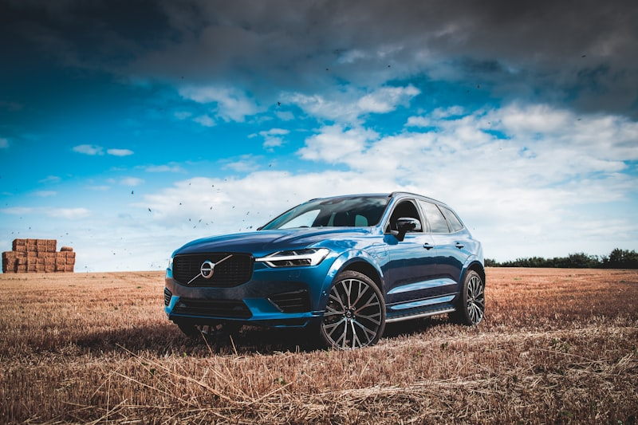

Hyundai Repair & Service in Cedar Rapids
Theta II engine experts — from routine maintenance to complex repairs.
Expert Hyundai Repair in Cedar Rapids
Hyundai vehicles have earned a reputation for value and reliability, but like any brand, they have their weak spots. Whether you drive an Elantra, Tucson, Santa Fe, Sonata, Kona, or Palisade, Cedar Automotive has the experience and equipment to keep your Hyundai running at its best. We handle routine maintenance, complex engine work, and everything in between.
Hyundai's Theta II engine family — the 2.0L and 2.4L found in Sonata, Santa Fe, and Tucson — has well-documented issues with engine bearing failure and excessive oil consumption. Our technicians are experienced in diagnosing these problems early, before a minor knock turns into a seized engine. We also understand the nuances of Hyundai's dual-clutch transmission (DCT), which requires specialized service procedures that many general shops overlook.
From the compact Kona to the full-size Palisade, every Hyundai model gets the same thorough attention. We use professional-grade diagnostic equipment to access Hyundai-specific fault codes and live data — giving you accurate diagnoses without the dealership price tag. Located in Cedar Rapids near the regional airport, we offer same-day service for most appointments.
Hyundai Services We Provide
- Oil changes and fluid services (conventional and synthetic)
- Brake inspection, repair, and replacement
- Engine diagnostics, repair, and Theta II service
- DCT transmission service and clutch pack replacement
- Electrical system diagnostics and repair
- Suspension and steering repair
- AC and heating system service
- Timing chain inspection, tensioner, and replacement
- Car key and key fob programming

Why Choose Cedar Automotive for Your Hyundai?
Hyundai Diagnostic Expertise
Professional-grade scanners read Hyundai-specific codes and live data — not just generic OBD-II. We catch problems early.
Theta II Engine Specialists
We know the common failure patterns in Hyundai's 2.0L and 2.4L engines. Early diagnosis can save you from a complete engine replacement.
Dealership Quality, Fair Pricing
Same diagnostic capability as the Hyundai dealer — without the dealer markup. Honest estimates before work begins.
Common Hyundai Issues We Fix
These are the problems we see most often in Hyundai vehicles at our Cedar Rapids shop.
Engine Bearing Failure (Theta II)
Hyundai's 2.0L and 2.4L Theta II engines are known for connecting rod bearing failure caused by manufacturing debris. Symptoms include engine knocking, oil pressure warnings, and eventual seizure. We diagnose bearing wear early and can perform engine repairs or replacement before catastrophic failure.
DCT Hesitation & Shuddering
Hyundai's dual-clutch transmission (DCT) in Elantra, Tucson, Kona, and Veloster models can develop hesitation from a stop, jerky shifting, and shuddering at low speeds. We diagnose whether it's a clutch pack, TCM software, or mechatronic unit issue and recommend the right repair.
Paint Peeling & Clear Coat Failure
Many Hyundai models experience premature paint peeling and clear coat delamination, particularly on roofs and hoods. While paint repair is outside our scope, we can inspect for underlying rust damage and refer you to a trusted body shop in Cedar Rapids.
AC Compressor Failure
Hyundai AC compressors can fail prematurely, especially in Sonata, Elantra, and Tucson models. We diagnose refrigerant leaks, compressor clutch issues, and electrical faults to restore your AC before Iowa's summer heat.
Excessive Oil Consumption
Beyond the Theta II recall issues, many Hyundai models burn oil between changes due to piston ring design or worn valve seals. We perform oil consumption tests, identify the root cause, and recommend the most cost-effective repair for your situation.
Starter Motor Failure
Hyundai starters can fail without warning, leaving you stranded with a no-crank condition. We test the starter, battery, and electrical connections to determine the exact cause and get you back on the road quickly.
Related Services
Frequently Asked Questions
Is my Hyundai affected by the Theta II engine recall?
Many Hyundai models with the 2.0L and 2.4L Theta II engine are affected by recalls related to engine bearing failure and seizure. At Cedar Automotive, we can check your VIN, diagnose engine knocking or oil consumption issues, and perform the necessary repairs. Call (319) 450-7584 to schedule an inspection.
Do you service Hyundai DCT transmissions in Cedar Rapids?
Yes. Hyundai's dual-clutch transmission (DCT) requires specialized knowledge to diagnose and service properly. We handle DCT hesitation, shuddering, and clutch pack replacement for Elantra, Tucson, Kona, and Veloster models.
How often should I change the oil in my Hyundai?
Most Hyundai models recommend oil changes every 5,000 to 7,500 miles with synthetic oil. However, if your Hyundai has a Theta II engine or you've noticed oil consumption between changes, we may recommend shorter intervals. We'll advise you based on your specific model and driving habits.
Do you program Hyundai keys and fobs?
Yes — we program Hyundai keys and key fobs for all models including Tucson, Santa Fe, Elantra, Sonata, and Kona. We handle transponder key programming, smart key fob replacement, and all-keys-lost situations at independent shop prices. Call (319) 450-7584 for pricing.